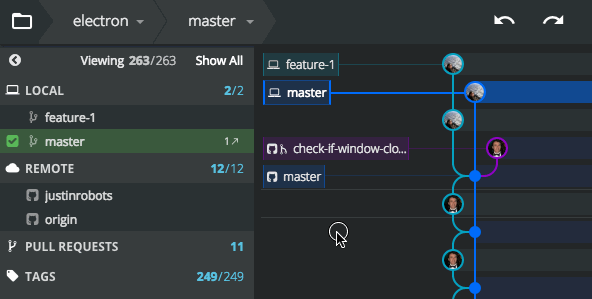

Git con GitKraken
¡Familiarízate!
Proyectos en GitKraken
Lo primero que pasará cuando gitkraken quede instalado, será pedirnos unos credenciales, como una cuenta de correo electrónico... una cuenta de github, etc.
Existen 3 maneras de empezar repositorio de GIT para empezar a trabajar en el:
Abrir
Clonar
Iniciar
Git Open
Si tienes un proyecto Git ya inicializado, te conviene abrirlo con GitKraken con la opción Abrir en el icono de la carpeta arriba, nos saldrá este menu simple:
Git Clone
Para clonar un repositorio, ya sea en un servidor local, o remoto, o algún servicio del tipo Github/Bitbucket, necesitaremos obtener el enlace de este mismo repositorio y en el icono de la carpeta, seleccionar la opción clonar. Nos aparecerán varias opciones simples para clonar nuestro proyecto.
Git Init
Para Inicializar un repositorio Git nos desplazamos a la pestaña inicializar y tenemos varias opciones simples que dependen de nuestras necesidades. Lo más simple sería crear un repositorio local, dónde podemos incluir algunas opciones interesantes, como la plantilla de un .gitignore , o el tipo de licencia como indica la imagen.

El primer Commit
¿Cómo hacer un commit?
Gitkraken es muy sencillo, una vez hayan nuevos cambios en nuestro proyecto y los archivos queden guardados, GitKraken detectará los nuevos cambios y nos lo meterá en la bandeja de "Unstaged Files". Para continuar con el proceso del commit, deberemos meter estos archivos o no todos ellos en el stage y luego podremos continuar con el Commit. Cabe destacar que podemos guardar estos archivos con la opción "Stash" que aparece en nuestra barra de herramientas, y sacarlos con la opción "Pop".
Si seleccionasemos Stage all, todos los archivos serian añadidos para el Commit, y en el recuadro de abajo, podremos poner un mensaje al Commit
¿Deshacer cambios? ¡más aun!
Podremos deshacer cambios descartando todos los cambios realizados con el botón en la ventana de los archivos en "Unstaged & Staged files" llamado "Discard All changes"
También podemos descartar líneas directamente antes de realizar un commit
¡Ah! ¡Commit malo! ¡Suelta!
Git Reset
Algunas veces cometemos errores o por ciertas circunstancias necesitamos volver atrás. Este es uno de los comandos más peligrosos con los que lidiar, sobretodo en repositorios remotos. Para hacerlo, tendremos que hacer click derecho en el commit deseado y marcar la opción Reset (soft, mixed, hard)
Reverting Changes
Si por ejemplo queremos revertir los últimos cambios (con un nuevo commit) de un commit, esta es tu opción. Click derecho sobre el commit deseado y "Revert commit"
Las nubes que flotan con 0s y 1s...
Git push
La opción más fácil. Una vez tengas tus commits listos, simplemente dale al botón en tu barra de tareas!
Git Pull
Esta es una de las opciones más complicadas, GitKraken nos une varias opciones en una sola, para que elijamos que podemos hacer, sin embargo, algunas como el rebase o el fast-forward se pueden realizar con click derecho sobre una rama. Si pulsamos el pull sin seleccionar ninguna opción de las que ofrece, nos hará un Pull normal y corriente. ¿Fácil no?
Divide et Impera...
Las ramas, poder subestimado
Crear una rama en GitKraken es muy muy facil, simplemente clickamos en el icono de la barra de herramientas "Branch" o click derecho sobre el commit que querramos hacer una nueva rama como muestra el gif.

Rebase o merge...
Ambas opciones muy útiles según de lo que dependamos en nuestra situación. El siguiente gif muestra un ejemplo fácil de como utilizarlo y que formas hay para hacerlo
¡Existen muchas más opciones en GitKraken!
Juan, te invito a que le eches un vistazo a este maravilloso programa. En cuando a personas novatas en git el hecho de ser tan visualmente atractivo y simple lo hace mucho más "userfriendly" Manual de GitKraken